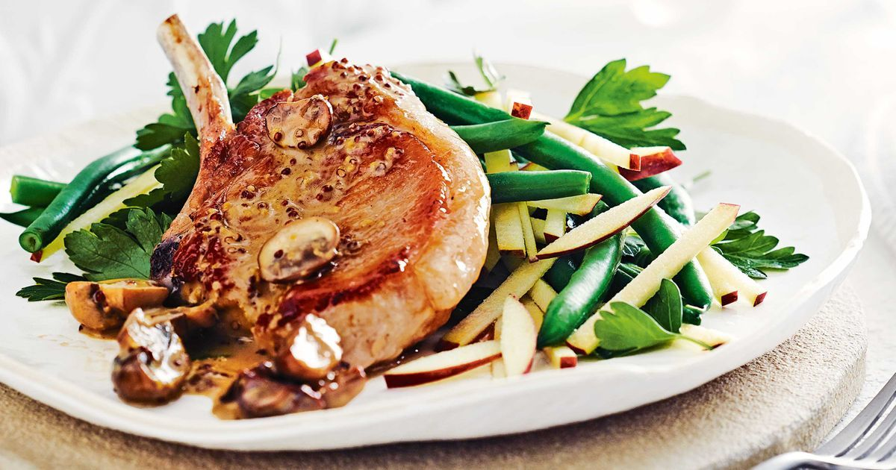
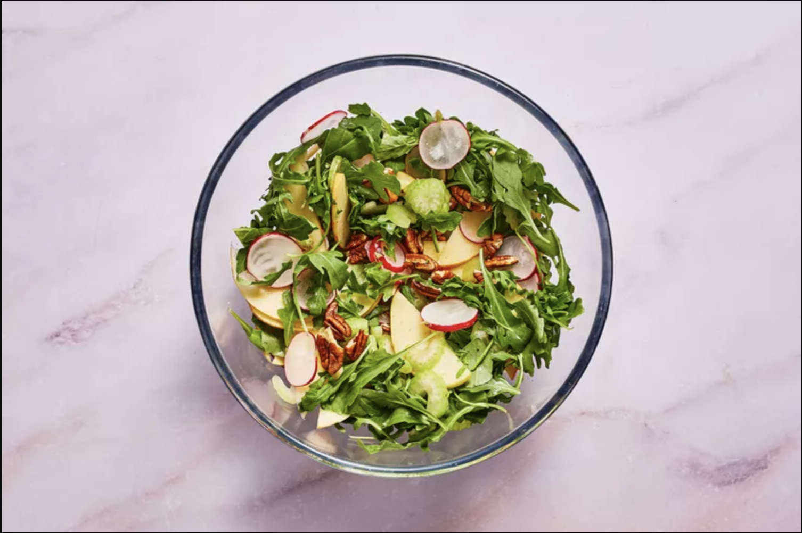
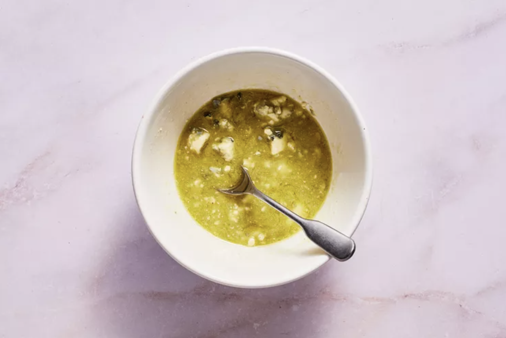
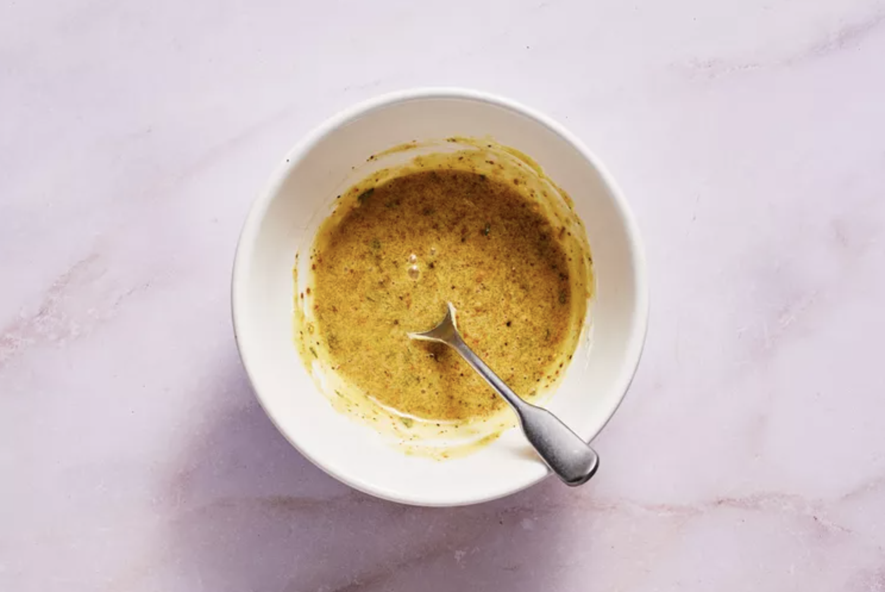
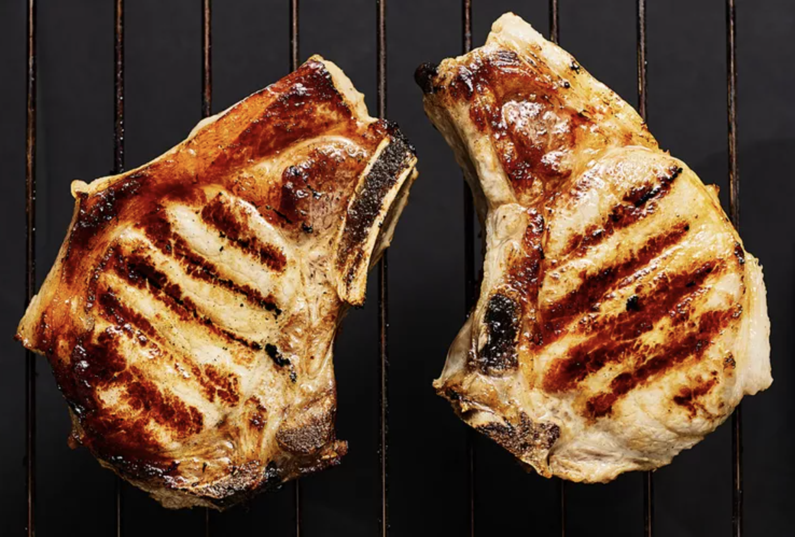
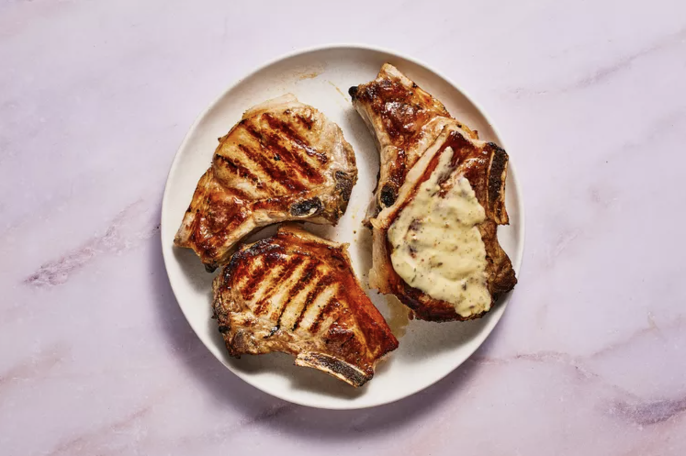
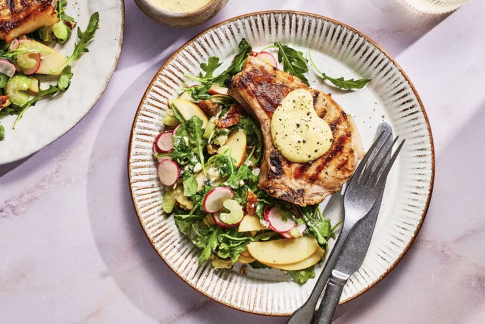

Dijon Pork Chops with Apple Salad
Grilling is an easy way to add a smoky, savory flavor to pork chops. This easy Dijon pork chop recipe will show you the best technique to make juicy, beautifully-charred bone-in pork chops on the grill. The pork chops are prepared using the direct-grilling method and are smothered in a Dijon-style sauce that provides a welcomed tangy flavor. Sliced apple combines with arugula, celery, radishes, and pecans for a crunchy salad topped with a cheesy vinaigrette dressing.
Ingredients
- 3 cups baby arugula
- 1 Fuji apple, sliced
- 1 cup thinly sliced celery stalks
- 1/2 cup thinly sliced radishes
- 1/2 cup toasted pecan pieces
- 3 tbsp cider vinegar
- 3 tbsp olive oil
- 1 tbsp honey
- Kosher salt
- Ground black pepper
- 1/4 cup crumbled blue cheese
- 2 tbsp Dijon mustard
- 1 tbsp whole grain mustard
- 1 tbsp mayonnaise or salad dressing
- 2 tsp packed brown sugar
- 2 tsp snipped fresh thyme or 1/2 tsp dried crushed thyme
- 1/4 tsp ground black pepper
- 4 bone-in pork loin chops, 1-inch thick
Step 1: Prepare the Salad
For salad, in a large bowl toss together arugula, apple, celery, radishes, and pecans; cover and chill.
Step 2: Make the Dressing
For dressing, in a small bowl whisk together vinegar, oil, honey, and blue cheese. Season with salt and pepper; cover and chill.
Step 3: Create the Dijon Mustard
In a small bowl whisk together Dijon-style mustard, whole-grain mustard, mayonnaise, brown sugar, thyme, and the 1/4 teaspoon pepper; set aside.
Step 4: Grill the Pork
For a charcoal or gas grill, place chops on the rack of a covered grill directly over medium heat. Grill for 10 to 12 minutes or until 145°F, turning once halfway through grilling.
Step 5: Plate the Cooked Pork
Transfer chops to a plate and let stand for 5 minutes. Spoon mustard mixture over chops.
Step 6: Serve with Salad
Toss salad with dressing; serve with chops.
